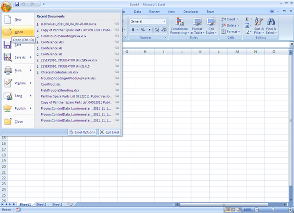
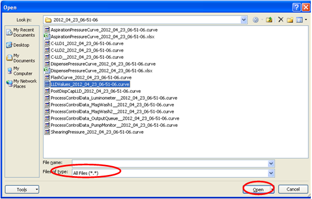
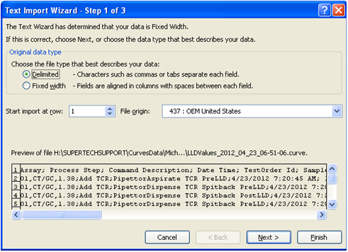
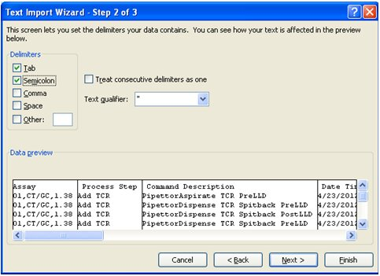
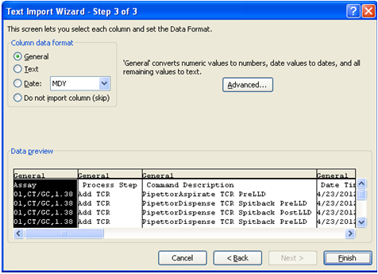
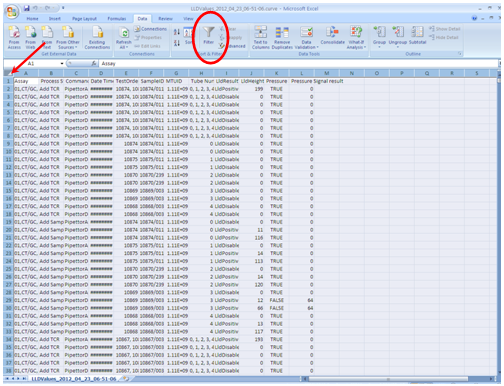
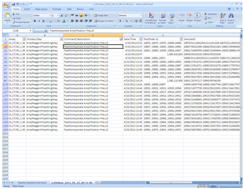
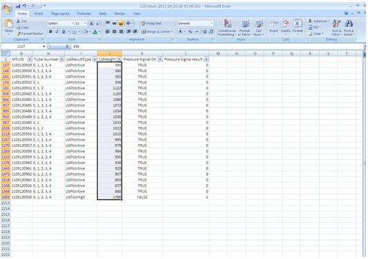

How to Graph LLD Curves
- Open Excel application.
- Select the "
 Open" option from MS Office button, and navigate to the folder where the desired curve file is found.
Open" option from MS Office button, and navigate to the folder where the desired curve file is found.
- Under the “Files of type” section, from the drop menu select “All Files (*.*)”. Highlight “LLDValues_yyyy_mm_dd-#.curve” file, and click the “Open” button.

- Select “Delimited”, then click on “Next >” button.

- Select “Tab”, “Semicolon” delimiters and then click “Next >” button.

- Select "General", followed by “Finish” button.

- Highlight entire worksheet by clicking on the upper left corner, then click on the “Filter” button.

- Under the “Command Description” column, from the drop menu, select “Pipettor Aspirate Amplification PreLLD”.

- Scroll to the right until the “LLDHeight” column is encountered, and then highlight data.

- Select the "Insert" tab, click on "Scatter" button.
- Select the Type of graph as desired.
- Right click on the curve, and select “Move Chart".
- Select "New sheet” and name it as desired.
- Edit the graph as desired.
- To graph "Pipettor Aspirate Enzyme PreLLD curve", follow same steps 1-13, but in step 8, select “Pipettor Aspirate Enzyme PreLLD ”.
- To graph "Pipettor Aspirate Probe PreLLD curve", follow same steps 1-13, but in step 8, select “Pipettor Aspirate Probe PreLLD ”.
- To graph "Pipettor Aspirate Select PreLLD curve", follow same steps 1-13, but in step 8, select “Pipettor Aspirate Select PreLLD ”.
- To graph "Pipettor Aspirate TCR PreLLD curve", follow same steps 1-13, but in step 8, select “Pipettor Aspirate TCR PreLLD ”.
- To graph "Pipettor Sample Dispense PreLLD curve", follow same steps 1-13, but in step 8, select “Pipettor Sample Dispense PreLLD ”.
- To graph "Pipettor Sample Dispense PostLLD curve", follow same steps 1-13, but in step 8, select “Pipettor Sample Dispense PostLLD ”.


 button at the top of the page to send feedback, comments, or change requests.
button at the top of the page to send feedback, comments, or change requests.